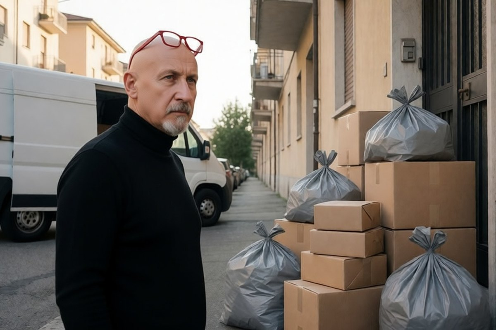

Politica italiana · 3 novembre 2026
La manovra cancella la tassa italiana da 2 euro sui pacchi da fuori Europa

Il contributo non era mai partito, e adesso non partirà più: lo Stato rinuncia a 91,3 milioni l'anno. Ma dal 1° novembre vale in tutta l'Unione un contributo europeo dello stesso importo.
di Franco Zanghì
Il pacco da pochi euro ordinato su internet e spedito da un paese extraeuropeo doveva pagare, in Italia, un contributo di 2 euro. L'articolo 30 del disegno di legge di bilancio lo cancella prima che entri in vigore.
Una tassa mai partita
Il contributo riguardava le spedizioni fino a 150 euro di valore e, dopo una serie di rinvii, doveva decorrere dal 1° gennaio 2027. Secondo l'Adnkronos, che per prima ha dato conto della norma, la relazione tecnica quantifica il conto della cancellazione in una perdita di gettito di 91,3 milioni di euro all'anno a partire dal 2027.
L'Ansa spiega la scelta con uno sguardo a Bruxelles: l'Italia rinuncia al proprio prelievo per allinearsi a quello europeo, ed evitare che lo stesso pacco finisca tassato due volte.
Quello che è cambiato in Europa
Secondo quanto riporta l'Adnkronos, dal 1° novembre vale in tutta l'Unione un contributo europeo di 2 euro sui pacchi spediti direttamente ai consumatori da paesi extraeuropei, qualunque sia il valore. Si paga per tipo di articolo: dieci magliette pagano 2 euro, magliette e cappellini ne pagano 4. È un prelievo permanente, da rivedere ogni due anni.
A questo si aggiunge il dazio europeo di 3 euro sui pacchi sotto i 150 euro, in vigore da luglio e previsto fino a luglio 2028.
Sempre secondo i dati riportati dall'Adnkronos, l'anno scorso nell'Unione sono entrati quasi 6 miliardi di pacchi di questo tipo, e 93 su 100 arrivavano dalla Cina. È la dimensione che spiega perché il tema sia finito su due tavoli, quello di Roma e quello di Bruxelles.
Chi paga alla fine
La Commissione europea sostiene che il costo non dovrebbe ricadere su chi compra. Ammette però che venditori e piattaforme potranno aggiungerlo al prezzo prima dell'acquisto. Detto in modo diretto: i 2 euro restano, e con tutta probabilità restano dentro il prezzo finale.
Il punto
Togliere una tassa italiana che si sarebbe sommata a una europea sullo stesso pacco è una scelta di buon senso, e in una manovra dove si cercano risorse ovunque rinunciare a 91,3 milioni l'anno non è un gesto scontato: vale la pena riconoscerlo.
Ma chi racconta che comprare online costerà meno dice una cosa non vera. Non cambia l'importo, cambia chi lo incassa: non più Roma, ma Bruxelles. E resta aperta la domanda che conta per i negozi che pagano affitto e tasse in Italia, cioè se quelle risorse serviranno a riequilibrare la concorrenza o diventeranno una voce del bilancio europeo lontana da chi l'ha pagata.
Fonti
- Adnkronos, «Tassa sui piccoli pacchi, la manovra abolisce il contributo di 2 euro», 1 novembre 2026
- Adnkronos, «Pacchi extra Ue, il contributo europeo di 2 euro», 1 novembre 2026
- Ansa, Valentina Brini, 1 novembre 2026
- Milano Finanza, «Piccoli pacchi, l'Italia segue l'Ue e cancella la tassa nazionale di 2 euro», 2 novembre 2026
- Il Fatto Quotidiano, «Addio alla tassa da 2 euro sui piccoli pacchi extra-Ue», 2 novembre 2026
La norma è nel disegno di legge di bilancio in discussione in Parlamento e può essere modificata. I dettagli del contributo europeo sono riportati dalla sola Adnkronos e vengono attribuiti a quella fonte.